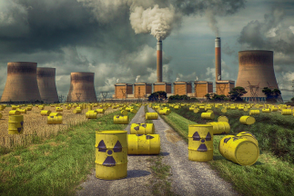

Scienziati italiani scoprono come distruggere rifiuti radioattivi prodotti dall'energia nucleare:<<Il nucleare è ora l'energia più sicura al mondo>>
Ottenere energia sicura e illimitata è uno dei più grandi problemi del XXI secolo, anche se l'energia perfetta per questo compito esiste già da anni.
E sì, come avrete letto dal titolo, parliamo proprio dell'energia nucleare. Nel corso di questi ultimi anni le centrali sono diventate sempre più sicure, lasciando un unico problema: le scorie radioattive.
Recentemente però, un gruppo di scienziati italiani ha finalmente trovato un modo per gestirli e poi sbarazzarsene.
I rifiuti radioattivi vengono sì prodotti dalle centrali nucleari ma anche da alcune industrie e
centri di ricerca, ma non si è mai trovato un modo per smaltirli oppure distruggerli.
Invece proprio a marzo del 2024 è stato creato un impianto, il primo di una serie, che al
suo interno può contenere macchine apposite per sbarazzarsi di queste scorie che
danneggiano in modo molto grave la salute dell’uomo.
Questa installazione prevede successivamente che il lavoro dell’uomo sia sostituito da robot
in grado di eseguire la distruzione in modo ancora più avanzato, per evitare che l’essere
umano venga a contatto con sostanze tossiche.